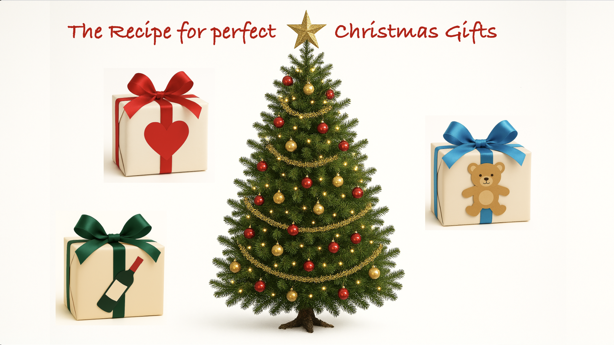
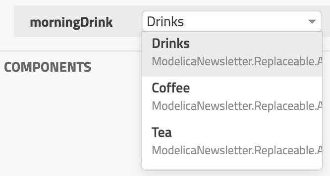
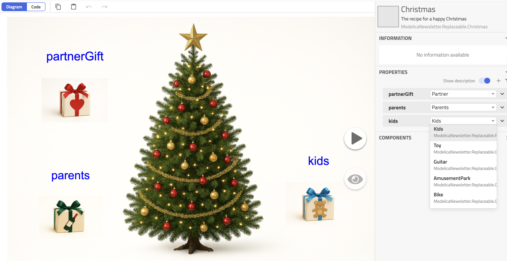
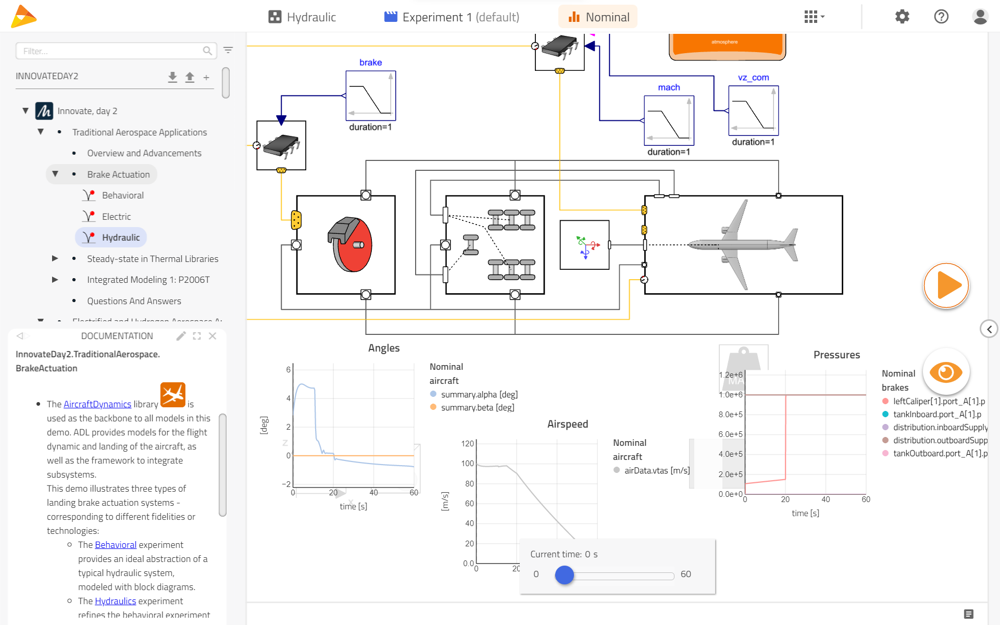

Choosing your Christmas gifts!

I hope you’ve got your preferred drink in hand ☕️🫖💧
📬 📰 Saturday editions - for having more time to read during the weekend! Let’s experiment for a few weeks. Let me know if this is not a convenient day (❓).
Thanksgiving is behind US (pun intended) and Christmas is in the mind of many. In Europe, it is a great deal: lights all around, Christmas market, and obviously… shopping for gifts!
To me, it is not the best part. What presents should I choose?
Well, today we will show that Modelica has a great solution for that.
Let’s dig into it!
What if I have several presents in mind?
A pool of options
You know your loved ones the best. This does not mean you can read their minds. You might have heard them saying they’d like to visit this destination nearby or try this new activity. Maybe you think they would love this new book or taking a course about Indian food cooking, etc.
(In case you did not notice, I am trying to give you ideas for those who are still looking for gifts! Personally, I am…!)
So you end up with a list of names and gifts. Some gifts can be for several persons but not all.
| Partner | Kids | Parents |
|---|---|---|
| Love letter | Toy | Book |
| Cooking course | Amusement Park | Tea & Coffee |
| Book | Bike 🚲 | Cooking course |
| Bike 🚲 | Guitar | Wine |
We see that some gifts could be for different persons. You might really like this book and want to give it to both your partner and your parents. Or both your partner and kids need a new bike!
So you could just put all the gifts in a room and let them pick the preferred option, or?
But NO!! You don’t want your parents to receive the love letter 💌 you wrote for your second half 😱 !! We need to solve that.
Constraining our gifts
Let’s brainstorm an idea.
What we really need is that each of them get a gift, and when they open the present, they can choose any item from their list on the table. But only those in their column… The parents would not get the Love Letter option.
Now, between us, write a love letter to your parents or a gratitude letter, and that would be the best gift they could get… Well, depends on the parents… Back to our point.
You end up with the following mapping - which is just the table:

And so the game is simple: only the relevant person can access its box, follow the lines and pick one present.
Now we made sure that the Love Letter will only reach our partner. 🤭.
(Well not “OUR” partner… our respective partners, eh!)
Unfortunately, there is a small glitch in the plan: we cannot fit all the items within the gift boxes physically!
We can do it digitally!
So we decide to develop a Modelica model of course!
We want the model to do exactly that: display only the relevant options to the relevant persons. Then we would just open our preferred Modelica tool with this model and let them chose in a menu that only allows for their potential gifts!
And here is a thing: it is possible!
We just need to understand two keywords: extends and replaceable.
The Modelica concepts you need today
I will try to demystify these two words for you in a few sentences. Of course, to do so, I take some shortcuts. But shortcuts is what allow us to move faster :)
extends
Modelica is an object-oriented modeling language. It means that everything is an “object”: a model for example, or a connector, or Real (is a type, which in the end is an “object” too).
Yes, Real! You remember we used it at some point?
There are two main ways to use an “object”:
- we can instantiate it. This means that we “use it” in our model. And by that I mean that in our model, we will have this object one or several times and we can only modify some defined parameters or so. In the end, these are “pointers” to the real object in your library. Changing the object in the library will change the “instances” in your model. This way, you can build up an electrical circuit using several
Resistorfrom MSL - they all point to the sameResistorin the library -, and if we add new capabilities in thisResistormodel, then you’ll have them also. - we can inherit it. This means that we “get all the code” of the “object” in our model. We don’t get the object itself, only the code it contains. So if you create “MyResistor” that inherit from the
Resistorof MSL, then you won’t get to recode all these lines nor the icon, they will “come” automatically. Andextendsis the keyword to use to inherit from another model.
So if I write:
model Coffee
extends Drinks;
end Coffee;Then we know that the Coffee will get all the code from our Drinks.
replaceable
Here is a fun one: replaceable allows you to specify that an instance (remember point 1. from above?) is actually just a “placeholder” and needs to be redeclared by a matching option.
We can constrain the choices for the replaceable model in different ways. The way we are discussing today is simple: automatically, all objects that inherit your model that is replaceable are candidates for its replacement!
So if I write:
model Breakfast
replaceable Drinks morningDrink "My preferred breakfast drink";
end Breakfast;Then I will see Coffee as an option on the list of choices!

Things start to make sense now for our Christmas gift story?
The perfect Christmas model
Let’s wrap up our gift story.
We built the perfect model for our Christmas and here it is!

And the crazy part is that, apart from some annotations and the Gift models I created, the model is simply:
model Christmas "The recipe for a happy Christmas"
.ModelicaNewsletter.Replaceable.ChristmasTree christmasTree ;
replaceable .ModelicaNewsletter.Replaceable.Receivers.Partner partnerGift "Your partner can choose their gift from the list";
replaceable .ModelicaNewsletter.Replaceable.Receivers.Parents parents "Your parents can choose their gift from the list";
replaceable .ModelicaNewsletter.Replaceable.Receivers.Kids kids "Your kids can choose their gift from the list" ;
end Christmas;How powerful is that?
Seems like Christmas magic to me! Only you can have Christmas all year long with Modelica 😉
But what can I do with that?
OK, OK, you might not really have a Breakfast model nor Christmas model use case… but there are plenty of great application to leverage this.
Everywhere you can decompose your system into subsystems, then it can be done this way. Imagine an aircraft landing gear, that carries the aircraft, the wheels, the brakes:

The same could be done for a ground vehicle (e.g. car) where you have the chassis, the wheels, the driver, the road, etc.
But you could just also do that to make replaceable a function in your model. Let’s say you have a Friction model and you want to give the user the choice to select a CoulombFriction or ViscousFriction, then you can use this construct and achieve the desired goal!
The END for today
Enough for today. I hope you learned something and enjoyed the Christmas story! This is a great transition to let you know that I will soon take some Christmas vacations. So maybe a couple more articles this year are to be expected… and a longer break will come 😊
Letting you time to review the past ones? 😉
Break is over, go back to what you were doing.
Clem
Next ->
© 2025 Clément Coïc — Licensed under creative commons 4.0. Non-commercial use only.